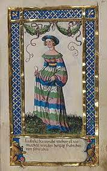

Se notering!. Blev ca 43 år.
omkring 800. [1]
843 Tours, Frankrike. [1]
Judith av Bayern, född mellan 795 och 805, död 19 april 843, var en tysk-romersk kejsarinna och drottning av Franken; gift med Ludvig den fromme.[10] Hon spelade en politiskt inflytelserik roll, först i egenskap av rådgivare till sin make, och sedan som deltagare i tronstriderna efter hans död på sin sons sida mot sina styvsöner.
Biografi
Judith var dotter till greve Welf I och Hedvig av Bayern och syster till Emma av Bayern. Vigseln ägde rum i februari 819. Hon mottog klostret San Salvatore i Brescia som förläning (beneficium) vid bröllopet.
Drottning
Judith beskrivs som vacker och viljestark. Hon var politiskt aktiv och utövade inflytande på maken. Hon tillförsäkrade sina bröder höga poster, och genomdrev att hennes son Karl den skallige också fick en del av riket efter maken, precis som dennes söner från makens förra äktenskap. Hon var impopulär bland adeln och fängslades 830 i ett kloster i Poitiers, anklagad för äktenskapsbrott och förvisades vid makens avsättning 833 till ett kloster i Tortona i Italien.
Judith återkom vid Ludvigs återinstallation 834. Hon var sedan aktiv i ett skiftande alliansbyggande för att säkra sonens arv.
Änkedrottning
Judith blev änka vid Ludvig den frommes död 840. I den följande striden mellan hennes son och styvsöner deltog hon på sin sons sida. Hon rekryterade 841 militära styrkor i Akvitanien för att stödja sonens strid mot sina styvsöner. Hennes inflytande vid sin sons hov minskade efter sonens giftermål med Ermengarde av Tours 842.